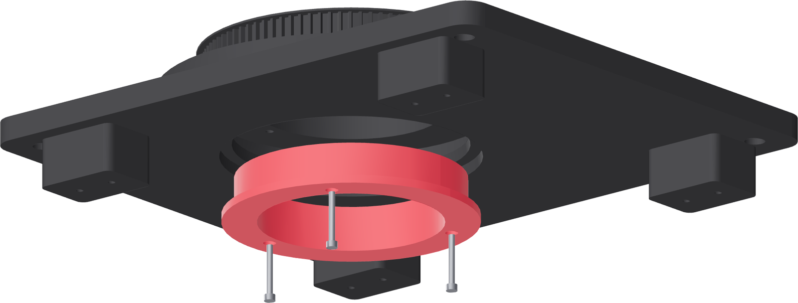

The spool, up from below
The spool does not carry the running load. It catches lift, and it keeps the Ø90 mm passage continuous through the base.

- Turn the fixture on its side, or get under it — the feet leave 24 mm, which is enough for a driver but not for a hand and a driver.
- Pass the spool hub up through the base's central bore from below, flange down.
- Turn it until its three flange holes find the platter's three inner-circle inserts at 60°, 180° and 300°. Turning the platter is easier than turning the spool.
- Start all three M3 × 25 before tightening any, then bring them up evenly at 0.5 N·m.
- Set the fixture back on its feet and look at the flange rim.
Gate — the flange floats
The flange rim sits inside the base's recess, about 1 mm clear of the base shoulder, and nothing projects below the base. Turn the platter a revolution: it must still be free. If the spool has taken up the running load, the balls are now unloaded and the axis is a flexible hub — back the three screws off and re-seat.